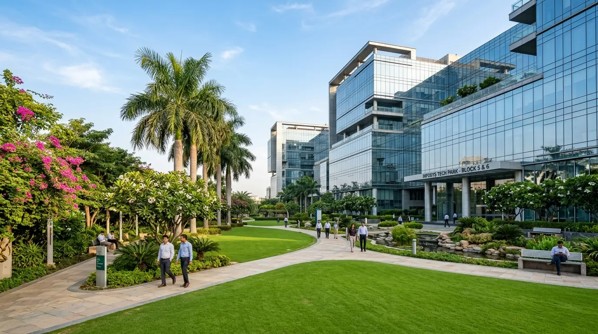

A school ground takes more punishment than almost any other turf: daily PE classes, inter-house matches, sports days and events, with the monsoon on top. The difference between a ground that is playable the morning after rain and one that stays waterlogged for days is mostly underground.

1. Survey and levels
Start with a topographic survey of the ground. The design gives the surface a gentle, even fall so water runs off instead of pooling, while staying flat enough for fair play. Precise grading with laser-guided equipment produces a far more even surface than levelling by eye.
2. Sub-surface drainage
Surface fall alone can't clear heavy monsoon rain. A sub-surface drainage system uses perforated pipes laid in gravel-filled trenches, usually in a herringbone pattern, leading to an outfall or a rainwater harvesting pit. On heavy clay soils, narrow sand-filled slits across the surface help water reach the drains faster.
3. Root zone and outfield turf
The outfield turf grows in a sandy root zone laid over the drainage layer, which lets water pass through quickly. Bermuda grass, known locally as doob, is the most widely used warm-season turf in India: it handles heat and heavy wear and recovers quickly. It can be established from sprigs or laid as turf, and needs a grow-in period of several weeks to a few months before the ground can take full use.
4. The pitch square
The pitch is built separately from the outfield, using clay-rich soil compacted in layers so it plays firm and true. It needs regular rolling, mowing and preparation before matches. Practice nets with synthetic pitches take daily wear away from the main square.
5. Running track
A track around the ground needs a compacted base, edging and its own drainage. The surface choice, such as murram or cinder versus synthetic, decides both the cost and how much upkeep the track needs.
Schedule construction so the grow-in finishes before the academic session starts. A ground opened too early gets damaged before the turf has rooted.
6. Irrigation and maintenance
Sprinklers or pop-up irrigation keep the outfield even through dry months. A maintenance calendar should cover mowing, aeration, top dressing, fertilising, weed control and rest periods after heavy use. Training the school's ground staff is part of the job.
From our work
For Angels Public School, Faridabad, we built a cricket ground, a multi-lane running track and sub-surface drainage. See our sports turf and grounds services.
Planning a School or Club Ground?
Send us the ground dimensions and location. We'll survey the site and propose levels, drainage and turf with a clear, itemised estimate.
Book a Site Visit ↗